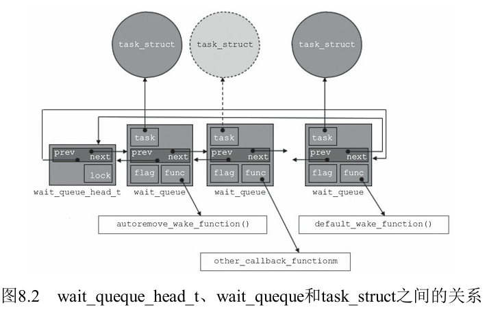

14 阻塞与非阻塞IO
Linux阻塞与非阻塞IO
阻塞与非阻塞的区别
- 阻塞：在对
fd执行IO操作时，若不能获得资源，则挂起进程直到满足可操作的条件后再进行操作。被挂起的进程进入睡眠状态，被从调度器的运行队列移走，直到等待的条件被满足 - 非阻塞：在不能对
fd进行IO操作时，并不挂起，它要么放弃，要么不停地查询，直至可以进行操作为止
应用层的代码上两者的区别：
1 | // 阻塞IO |
1 | // 非阻塞IO |
如果要使用非阻塞IO的话，用
open的时候，要加O_NONBLOCK宏，或者在打开了后，用fcntl()改变
在驱动层中，如果要支持非阻塞IO，需要在自己实现的xxx_read等IO操作中，对file->f_flags来判断打开这个file时，采用了阻塞IO还是非阻塞，例如
1 | static ssize_t xxx_write(struct file *file, const char *buffer, size_t count,loff_t *ppos) |
驱动层实现阻塞IO
我们在应用层对一个文件描述符进行I/O操作时，本质上调用的是该文件类型所对应的file_operations中具体的实现，故我们上面提到的阻塞I/O（数据没就绪时，阻塞该线程）之类的机制，需要我们自己实现
下面举个简单的实现例子：
调用 read()：
- 如果数据不可用，内核将当前线程加入
wait_queue，并将其状态设置为不可调度（TASK_INTERRUPTIBLE 或 TASK_UNINTERRUPTIBLE） - 内核调用
schedule()让出 CPU 资源，调度器将执行其他线程
数据就绪：
- 数据准备好后，内核会触发 I/O 事件（比如中断），在其中通过
wake_up()函数唤醒等待在该wait_queue中的所有线程。 - 线程被唤醒后，其状态被改为
TASK_RUNNING，然后重新被调度器执行
线程被唤醒：
- 唤醒后的线程重新运行，从之前阻塞的位置继续执行，并完成
read()调用
等待队列具体API看驱动开发详解的第8章，重要API：
1 | // 往一个等待队列里插入/删除元素 |

- 由图可见，等待队列里每个元素都对应一个进程/线程
驱动层实现IO多路复用
IO多路复用的定义：Linux内核提供了select、poll、epoll这3个系统调用用监控多个fd的某些IO操作（如读、写…）是否准备就绪，如果没有就阻塞当前进程
关于应用层如何使用IO多路复用，看Linux应用编程里的文件IO笔记
要想使设备在应用层支持IO多路复用，那么得在内核中此类文件的file_operations中实现poll成员变量
- 虽然有3个系统调用，但是只用实现以下这个函数就行了
1 | unsigned int(*poll)(struct file * filp, struct poll_table* wait); |
- poll_table：被阻塞的、待唤醒的等待队列需要注册到里面
- 返回设备资源的可获取状态，即POLLIN、POLLOUT、POLLPRI、 POLLERR、POLLNVAL等宏的位“或”结果。每个宏的含义都表明设备的一种状态，如POLLIN（定义为 0x0001）意味着设备可以无阻塞地读，POLLOUT（定义为0x0004）意味着设备可以无阻塞地写在
在驱动层对poll的实现中，一般有以下2个重要步骤：
- 1.检查文件状态：根据
poll_table的key检查文件描述符的状态 - 2.加入等待队列：如果文件描述符未就绪，调用
poll_wait函数将当前进程加入等待队列。poll_wait是内核提供的一个宏，用于简化等待队列的管理
1 | void poll_wait(struct file *filp, wait_queue_heat_t *queue, poll_table * wait) |
作用：将当前进程加入文件描述符的等待队列中，以便在文件描述符就绪时（例如，数据可读或可写）能够唤醒该进程
驱动层实现poll的一个例子
1 | unsigned int my_poll(struct file *filp, struct poll_table *wait) { |
All articles on this blog are licensed under CC BY-NC-SA 4.0 unless otherwise stated.